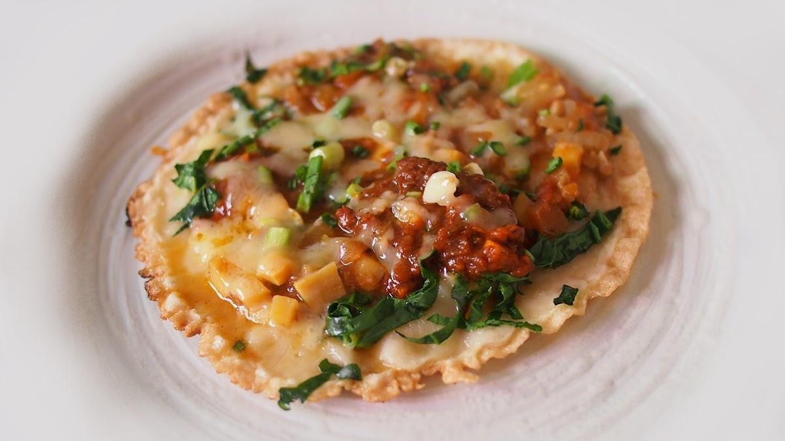

CHATAMARI-RECIPE

INGREDIENTS
- Rice Flour-1 cup
- Lentil paste-1/3 cup
- Salt-1/6 teaspoon
For Toppings
- Ground chicken/turkey or any other ground meat-150 gram
- Chopped onion¼ cup
- Green peas-¼ cup
- Diced tomato-1 tablespoon
- Diced hot green pepper1 teaspoon
- Garlic-1 teaspoon
- Ginger-½ teaspoon
- Oil-1 tablespoon
- Salt to taste
Alternative Toppings
Method
Pre-cooking
- Soak black lentil in water overnight or until the black coating is easily removed.
- Remove black coating by rinsing with water.
- Mix lentil paste with rice flour to make a thin paste. (thinner then cake paste)
- For topping mix everything well.
Cooking Part
- Heat the flat pan on medium heat
- Put the paste on the hot pan in rolling action making as thin of sheet as possible
- Put all topping on the paste.
- Cover the paste and cook in medium heat (chatamari is cooked from only one side)
- Cook until the paste is done and serve hot.
- Use the damp cloth to wipe out any burnt left behind
Chatamari Ready!!!